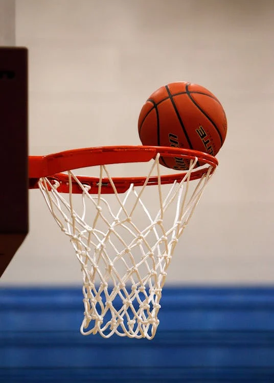

News

Latest News about the Game and Players
Trades
- *Luka Dončić to the Lakers*: The Mavericks traded Luka Dončić to the Los Angeles Lakers in exchange for Anthony Davis ¹.
- *De'Aaron Fox to the Spurs*: The Sacramento Kings traded De'Aaron Fox to the San Antonio Spurs in a three-way trade involving the Chicago Bulls ¹.
- *Caleb Martin to the Mavericks*: The Dallas Mavericks acquired Caleb Martin from the Philadelphia 76ers in exchange for Quentin Grimes and a 2025 second-round pick ².
Injuries
- *Luka Dončić*: Dončić is currently out with a calf injury and is expected to make his Lakers debut soon ¹.
- *Joel Embiid*: Embiid returned to the court after a month-long absence due to a knee injury ³.
Player Performances
- *Joel Embiid*: Embiid returned with a triple-double, scoring 29 points, grabbing 11 rebounds, and dishing out 10 assists ².
- *Trae Young*: Young dropped 34 points, including 17 in the fourth quarter, to lead the Atlanta Hawks to a win over the Detroit Pistons ².
- *Shai Gilgeous-Alexander*: Gilgeous-Alexander scored 34 points, dished out 6 assists, and grabbed 3 rebounds in a win over the Milwaukee Bucks ².
League News
- *NBA Trade Deadline*: The trade deadline is set for Thursday at 3 p.m. ET, and several teams are expected to make moves ¹.
- *NBA All-Star Game*: The NBA All-Star Game is approaching, and the league has announced the participants for the dunk contest and the celebrity game ².
2. Current Standings
Eastern Conference Standings
1. *Cleveland Cavaliers*: 40-10 (.800), 24-4 home, 16-6 away, 8-1 division, 26-7 conference ¹
2. *Boston Celtics*: 36-15 (.706), 16-9 home, 20-6 away, 6-2 division, 26-9 conference ¹
3. *New York Knicks*: 34-17 (.667), 18-9 home, 16-8 away, 9-1 division, 23-10 conference ¹
4. *Indiana Pacers*: 28-21 (.571), 14-7 home, 13-13 away, 6-4 division, 17-15 conference ¹
5. *Milwaukee Bucks*: 26-22 (.542), 16-8 home, 9-14 away, 6-5 division, 21-15 conference ¹
Western Conference Standings
1. *Oklahoma City Thunder*: 39-9 (.813), 21-3 home, 17-6 away, 7-1 division, 22-8 conference ¹
2. *Memphis Grizzlies*: 34-16 (.680), 21-5 home, 13-11 away, 8-4 division, 19-12 conference ¹
3. *Houston Rockets*: 32-18 (.640), 15-8 home, 17-9 away, 9-2 division, 19-10 conference ¹
4. *Denver Nuggets*: 31-19 (.620), 15-8 home, 16-11 away, 4-4 division, 18-12 conference ¹
5. *Los Angeles Lakers*: 29-19 (.604), 16-6 home, 13-13 away, 8-3 division, 18-11 conference
3. Upcoming Games
- *Thursday, February 6*: Lakers vs. New Orleans Pelicans, 10:00 PM ET ¹
- *Saturday, February 8*: Lakers vs. Indiana Pacers, 4:00 PM ET ¹
- *Monday, February 10*: Lakers vs. Utah Jazz, 10:30 PM ET ¹